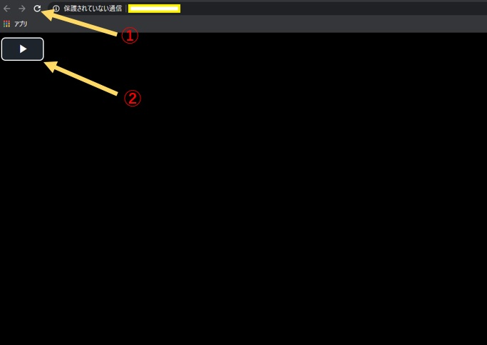

成増サイケデリック村 オンライン 配信手順
配信環境に合わせた手順を参照してください．
不明点は担当者に確認をお願いします．
Android端末による配信
Larix Broadcasterという動画配信ソフトを利用します．
以下のサイトからソフトをダウンロードしてインストールしてください．
https://play.google.com/store/apps/details?id=com.wmspanel.larix_broadcaster&hl=ja
インストールが済んだらLarix Broadcasterを起動します．
①メイン画面から設定画面を開きます．
②設定画面のURLに配信管理者から指定されたURLを入力します．
③SAVEボタンを押下して画面を閉じます．
④メイン画面で配信開始ボタンを押下して配信を開始します．
④配信サーバにアクセスして配信状態を確認します．配信状態の確認の項目を参照してください．

iOS端末による配信（iPhone,iPad）
Larix Broadcasterという動画配信ソフトを利用します．
以下のサイトからソフトをダウンロードしてインストールしてください．
https://apps.apple.com/jp/app/larix-broadcaster/id1042474385
使用方法は”Android端末による配信”と同様のためそちらを参照してください．
PCによる配信(Windows,Mac,Linux)
OBSという動画配信ソフトを利用します．
以下のサイトからソフトをダウンロードしてインストールしてください．
https://obsproject.com/ja
インストールが済んだらOBSを起動します．
①右下に並ぶボタンから”設定”を選択し，選択画面を表示します．
②配信のタブを選択し，画像の通り情報を入力します．
サービス：カスタム
サーバー：配信担当者にご確認ください
ストリームキー：配信担当者にご確認ください
③配信画面や音声設定後，配信開始キーを押下すると配信が開始されます
④配信サーバにアクセスして配信状態を確認します．配信状態の確認の項目を参照してください．

配信状態の確認
配信管理者から知らされた確認用URLにブラウザからアクセスします．
このページには複数の配信確認画面がありますが，配信管理者に知らされた配信番号の確認画面に配信内容が表示されます．
①ブラウザの更新ボタンからページの更新をします
②再生ボタンを押下すると配信画像と音声が再生されます．
*数十秒のタイムラグがあります
*待っていても再生されない場合は①と②の手順を繰り返してください
